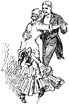

King, Richardson &: Co., Publishers
Springfield, Mass.; Cincinnati; Sacramento; Dallas, Texas.
1893
"Sold only by our Authorized Agents."
Lord Chesterfield, in his letters to his son, says: "Dancing is, in itself, a very trifling and silly thing: but it is one of those established follies to which people of sense are sometimes obliged to conform; and then they should be able to do it well. And though I would not have you a dancer, yet, when you do dance, I would have you dance well, as I would have you do everything you do well." In another letter, he writes: "Do you mind your dancing while your dancing master is with you? As you will be often under the necessity of dancing a minuet, I would have you dance it very well. Remember that the graceful motion of the arms, the giving of your hand, and the putting off and putting on of your hat genteelly, are the material parts of a gentleman's dancing. But the greatest advantage of dancing well is, that it necessarily teaches you to present yourself, to sit, stand, and walk genteelly; all of which are of real importance to a man of fashion."
If you cannot afford to give a ball in good style, you had better not attempt it at all.
Having made up your mind to give a ball and to do justice to the occasion, and having settled upon the time, the next thing is to decide whom and how many to invite. In deciding upon the number a due regard must be paid to the size of the rooms; and after allowance for a reasonable number who may not accept the invitation, there should be no more invited than can find comfortable accommodations, both sitting and standing-room being taken into account, and at the same time have the floor properly free for dancing. The more guests you have the more brilliant, and the fewer you have the more enjoyable, will the occasion be.
Any number over a hundred guests constitutes a "large ball;" under fifty it is merely a "dance."
As dancing is the amusement of the evening, due regard should be paid to the dancing qualifications of the proposed guests.
The invitations issued and accepted for an evening party will be written in the same style as those already described for a dinner-party. They should be sent out at least from seven to ten days before the day fixed for the event, and should be replied to within a week of their receipt, accepting or declining with regrets. By attending to these courtesies, the guests will have time to consider their engagements and prepare their dresses, and the hostess will also know what will be the number of her party.
One should be scrupulous and not wound the prejudices of a friend by sending her an invitation to a ball when it is well known she is conscientiously opposed to dancing.
No one now sends a note of interrogation to a dance; cards are universally employed. The form of an invitation to a tea-party differs from that to a dance, in respect that the one specifies that you are invited to tea, the other does not, but merely requests the pleasure of your company on such an evening, and perhaps names the hour.
Vary your toilet as much as possible, for fear that idlers and malignant wits, who are always a majority in the world, should amuse themselves by making your dress the description of your person.
Certain fashionables seek to gain a kind of reputation by the odd choice of their attire, and by their eagerness to seize upon the first caprices of the fashions. Propriety with difficulty tolerates these fancies of a spoiled child; but it applauds a woman of sense and taste, who is not in a hurry to follow the fashions, and asks how long they will last, before adopting them; finally, who selects and modifies them with success according to her size and figure.
If it is to be a simple evening party, in which we may wear a summer walking-dress, the mistress of the house gives verbal invitations, and does not omit to apprise her friends of this circumstance, or they might appear in unsuitable dresses. If, on the contrary the soiree is to be in reality a ball, the invitations are written, or what is better, printed and expressed in the third person.
A room appropriate for the purpose, and furnished with cloak-pins to hang up the shawls and other dresses of the ladies, is almost indispensable. Domestics should be there also, to aid them in taking off and putting on their outside garments.
We are not obliged to go exactly at the appointed hour; it is even fashionable to go an hour later. Married ladies are accompanied by their husbands; unmarried ones, by their mother, or by an escort.
A lady cannot refuse the invitation of a gentleman to dance, unless she has already accepted that of another, for she would be guilty of an incivility which might occasion trouble; she would, moreover, seem to show contempt for him whom she refused, and would expose herself to receive in secret an ill compliment from the mistress of the house.
When a young lady declines dancing with a gentleman, it is her duty to give him a reason why, although some thoughtless ones do not. No matter how frivolous it may be, it is simply an act of courtesy to offer him an excuse; while, on the other hand, no gentleman ought so far to compromise his self-respect as to take the slightest offense at seeing a lady by whom he has just been refused, dance immediately after with some one else.
In inviting a lady to dance with you, the words, "Will you honor me with your hand for a quadrille?" or, "Shall I have the honor of dancing this set with you?" are more used now than "Shall I have the pleasure?" or, "Will you give me the pleasure of dancing with you."
Married or young ladies, cannot leave a ball-room or any other party, alone. The former should be accompanied by one or two other married ladies, and the latter by their mother, or by a lady to represent her.
Ladies should avoid talking too much; it will occasion remarks. It has also a bad appearance to whisper continually in the ear of your partner.
The master of the house should see that all the ladies dance; he should take notice, particularly of those who seem to serve as drapery to the walls of the ball-room, (or wall-flowers, as the familiar expression is,) and should see that they are invited to dance. But he must do this wholly unperceived, in order not to wound the self-esteem of the unfortunate ladies.
Gentlemen whom the master of the house requests to dance with these ladies, should be ready to accede to his wish, and even appear pleased at dancing with a person thus recommended to their notice.
Ladies who dance much, should be very careful not to boast before those who dance but little or not at all, of the great number of dances for which they are engaged in advance. They should also, without being perceived, recommend to these less fortunate ladies, gentlemen of their acquaintance.
In giving the hand for ladies chain or any other figures, those dancing should wear a smile, and accompany it with a polite inclination of the head, in the manner of a salutation. At the end of the dance, the gentleman reconducts the lady to her place, bows and thanks her for the honor which she has conferred. She also bows in silence, smiling with a gracious air.
In these assemblies, we should conduct ourselves with reserve and politeness towards all present, although they may be unknown to us.
Never hazard taking part in a quadrille, unless you know how to dance tolerably; for if you are a novice, or but a little skilled, you would bring disorder into the midst of pleasure. Being once engaged to take part in a dance, if the figures are not familiar, be careful not to advance first. You can in this way govern your steps by those who go before you. Beware, also, of taking you place in a set of dancers more skillful than yourself. When an unpracticed dancer makes a mistake, we may apprize him of his error; but it would be very impolite to have the air of giving him a lesson.
Dance with grace and modesty, neither affect to make a parade of your knowledge; refrain from great leaps and ridiculous jumps, which would attract the attention of all towards you.
In a private ball or party, it is proper for a lady to show still more reserve, and not manifest more preference for one gentleman than another; she should dance with all who ask properly.
In public balls, a gentleman offers his partner refreshments, but which she very seldom accepts, unless she is well acquainted with him. But in private parties, the persons who receive the company, send round cake and other refreshments, of which every one helps themselves. Near the end of the evening, in a well regulated ball, it is customary to have a supper; but in a soiree, without great preparation, we may dispense with a supper; refreshments are, however, necessary, and not to have them would be the greatest impoliteness.
We should retire incognito, in order not to disturb the master and mistress of the house; and we should make them, during the week, a visit of thanks, at which we may converse of the pleasure of the ball and the good selection of the company.
The proprieties in deportment, which concerts require, are little different from those which are recognized in every other assembly, or in public exhibitions, for concerts partake of the one and the other, according as they are public or private. In private concerts, the ladies occupy the front seats, and the gentlemen are generally in groups behind, or at the side of them. We should observe the most profound silence, and refrain from beating time, humming the airs, applauding, or making ridiculous gestures of admiration. It often happens that a dancing soiree succeeds a concert, and billets of invitation, distributed two or three days before hand should give notice of it to the persons invited.
A lady will not cross a ball-room unattended.
A gentleman will not take a vacant seat next to a lady who is a stranger to him. If she is an acquaintance, he may do so with her permission.
White kid gloves should be worn at a ball, and only be taken off at supper-time.
In dancing quadrilles do not make any attempt to take steps. A quiet walk is all that is required.
When a gentleman escorts a lady home from a ball, she should not invite him to enter the house; and even if she does so, he should by all means decline the invitation. he should call upon her during the next day or evening.
As the guests enter the room, it is not necessary for the lady of the house to advance each time toward the door, but merely to rise from her seat to receive their courtesies and congratulations. If, indeed, the hostess wishes to show particular favor to some peculiarly honored guests, she may introduce them to others, whose acquaintance she may imagine will be especially suitable and agreeable.
When entering a private ball or party, the visitor should invariably bow to the company. No well-bred person would omit this courtesy in entering a drawing-room; although the entrance to a large assembly may be unnoticed.
Any presentation to a lady in a public ball-room, for the mere purpose of dancing, does not entitle you to claim her acquaintance afterwards; therefore, should you meet her, at most you may lift your hat; but even that is better avoided - unless, indeed, she first bow - as neither she nor her friends can know who or what you are.
Never wait until the signal is given to take a partner, for nothing is more impolite than to invite a lady hastily, and when the dancers are already in their places; it can be allowed only when the set is incomplete.
In private parties, a lady is not to refuse the invitation of a gentleman to dance, unless she is previously engaged. the hostess must be supposed to have asked to her house only those persons whom she knows to be perfectly respectable and of unblemished character, as well as pretty equal in position; and thus, to decline the offer of any gentleman present, would be a tacit reflection on the gentleman or lady of the house.
There is a custom which is sometimes practiced both in the assembly room and at private parties, which cannot be too strongly reprehended; we allude to the habit of ridicule and ungenerous criticism of those who are ungraceful or otherwise obnoxious to censure, which is indulged in by the thoughtless, particularly among the dancers. Of its gross impropriety and vulgarity we need hardly express an opinion; but there is such an utter disregard for the feelings of others implied in this kind of negative censorship, that we cannot forbear to warn our young readers to avoid it. The "Koran" says: "Do not mock - the mocked may be better than the mocker." Those you condemn may not have had the same advantages as yourself in acquiring grace or dignity, while they may be infinitely superior in purity of heart and mental accomplishments. The advice of Chesterfield to his son, in his commerce with society, to do as you would be done by, is founded on the Christian precept, and worth of commendation. Imagine yourself the victim of another's ridicule, and you will cease to indulge in a pastime which only gains for you the hatred of those you satirize, if they chance to observe you, and the contempt of others who have noticed your violation of politeness, and abuse of true society.
To see another chapter from this book please look at the section on Weddings.